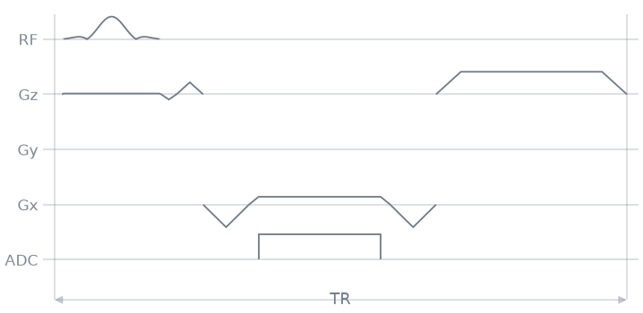
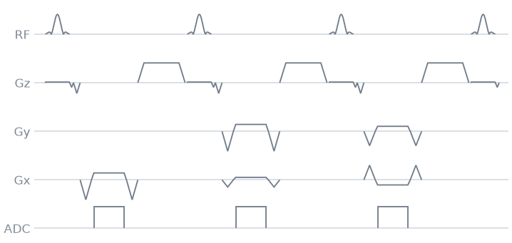

Note
Go to the end to download the full example code.
9. Sequence modules#
Most of your MPRAGE function designs events: the inversion and its crusher, the slab-selective pulse, the merged readout, the partition encodings. The same parts appear in many sequences, and pypulseqpp ships them as sequence modules. A module designs one part of the repetition from a few physical parameters, publishes its events under fixed names, lays them out in blocks, and tells you its timing. The loop stays yours.
In this lesson you rebuild the MPRAGE with three modules: an inversion, a slab excitation and a stack-of-stars readout. Your sequence function shrinks to its protocol and its loop.
Learning objectives
Design the inversion, the excitation and the readout with
InversionPreparation,SpatialSelectiveExcitationandRadialStackReadout.Read a module’s events, its blocks, its duration and its
center, and place the inversion time from them.Turn each spoke with a rotation extension instead of a rotated copy of the readout.
Previous: 8. Sequence functions. Next: 10. Custom sequence module, where you write a module of your own.
Modules#
Each module takes the scanner first, then what it needs to know: the
inversion its crusher’s voxel, the excitation its flip angle and slab, and
the readout the pulse it follows, the field of view and the matrix in
plane and along z. is_slab=True folds the slab rephaser into the
selection gradient, and spoiling_cycles leaves the readout’s spoiler on
z.
import numpy as np
import pypulseqpp as pp
from pypulseqpp import sequences
system = pp.Opts(
max_grad=32.0,
grad_unit="mT/m",
max_slew=130.0,
slew_unit="T/m/s",
rf_dead_time=100e-6,
rf_ringdown_time=20e-6,
adc_dead_time=10e-6,
)
inversion = sequences.InversionPreparation(system, voxel_size_m=5e-3)
excitation = sequences.SpatialSelectiveExcitation(
system, 8.0, 80e-3, duration_s=1e-3, is_slab=True
)
readout = sequences.RadialStackReadout(
system,
excitation.rf,
excitation.gz,
fov=220e-3,
matrix=128,
fov_z=80e-3,
matrix_z=16,
readout_bandwidth_hz=100e3,
spoiling_cycles=4.0,
)
Module interface#
A module publishes its events as attributes, and lays them out in
blocks, the blocks you add to your sequence in order. duration is
the length of the layout and center the instant the rest of the
sequence is timed against: the centre of the pulse for the inversion and
the excitation, the echo for the readout.
for name, module in [
("inversion", inversion),
("excitation", excitation),
("readout", readout),
]:
print(
f"{name:10} events {', '.join(sorted(vars(module.events))):45} "
f"{len(module.blocks)} blocks, {1e3 * module.duration:5.2f} ms, "
f"center at {1e3 * module.center:5.2f} ms"
)
inversion events gz_spoil, rf_prep 2 blocks, 10.98 ms, center at 5.10 ms
excitation events gz, rf 1 blocks, 1.28 ms, center at 0.60 ms
readout events adc, gx, gy, gz, gz_pre, gz_rew, gz_spoil, rf 4 blocks, 6.00 ms, center at 2.78 ms
The readout’s blocks open with the pulse it was given, so one spoke of your
train is exactly readout.blocks: the excitation, the partition
encoding gz_pre, the readout with its ADC, and the partition rewinder
with the spoiler. It also reports what it achieved:
print(
f"TE {1e3 * readout.echo_time:.2f} ms, spoke TR {1e3 * readout.duration:.2f} ms, "
f"bandwidth {readout.bandwidth_hz / 1e3:.0f} kHz"
)
readout.paper_plot()

TE 2.18 ms, spoke TR 6.00 ms, bandwidth 100 kHz
gz_pre and gz_rew encode the outermost partition. You scale them to
each partition with scale_grad(), as you scaled the phase
encoding in lesson 1.
Rotation extension#
In lesson 6 you rotated the readout gradient with
rotate(), which makes a new pair of x and y gradients for
every angle. A rotation extension, make_rotation(),
does it differently: you add it to the block, and the scanner rotates the
block’s gradients as it plays them. The readout stays one waveform in the
file, whatever the number of spokes.
Sequence function#
The function from lesson 8, with the modules in place of the design. The
inversion time is placed from the modules’ center: from the inversion’s
centre to the end of its layout, then the wait, then the excitation up to
its centre.
def radial_mprage(
system: pp.Opts,
*,
fov: float = 220e-3,
matrix: int = 128,
partitions: int = 16,
partition_thickness: float = 5e-3,
spokes_per_train: int = 64,
flip_angle_deg: float = 8.0,
ti: float = 900e-3,
tr: float = 2.5,
) -> pp.Sequence:
"""3D radial MPRAGE on a stack of stars, one partition per inversion.
Parameters
----------
fov : float, default=0.22
In-plane field of view (m).
matrix : int, default=128
In-plane matrix size.
partitions : int, default=16
Number of partitions.
partition_thickness : float, default=0.005
Thickness of one partition (m).
spokes_per_train : int, default=64
Golden-angle spokes played after each inversion.
flip_angle_deg : float, default=8.0
Readout flip angle (degrees).
ti : float, default=0.9
Inversion time (s), from the inversion centre to the first excitation.
tr : float, default=2.5
Time between two inversions (s).
Raises
------
ValueError
If the train does not fit between TI and the next inversion.
"""
slab = partitions * partition_thickness
inversion = sequences.InversionPreparation(system, voxel_size_m=partition_thickness)
excitation = sequences.SpatialSelectiveExcitation(
system, flip_angle_deg, slab, duration_s=1e-3, is_slab=True
)
readout = sequences.RadialStackReadout(
system,
excitation.rf,
excitation.gz,
fov=fov,
matrix=matrix,
fov_z=slab,
matrix_z=partitions,
readout_bandwidth_hz=100e3,
spoiling_cycles=4.0,
)
pulse, _, read, _ = readout.blocks
steps = (np.arange(partitions) - partitions // 2) / (partitions / 2)
gz_encode = [pp.scale_grad(readout.gz_pre, step) for step in steps]
gz_rewind = [pp.scale_grad(readout.gz_rew, step) for step in steps]
raster = system.block_duration_raster
ti_wait = pp.round_to_raster(
ti - (inversion.duration - inversion.center) - excitation.center, raster
)
if ti_wait < raster:
raise ValueError(f"TI of {1e3 * ti:.1f} ms is shorter than the inversion")
played = inversion.duration + ti_wait + spokes_per_train * readout.duration
recovery = pp.round_to_raster(tr - played, raster)
if recovery < raster:
raise ValueError(
f"TR of {1e3 * tr:.0f} ms is shorter than the "
f"{1e3 * (played + raster):.0f} ms one inversion takes"
)
wait_ti, wait_recovery = pp.make_delay(ti_wait), pp.make_delay(recovery)
golden_angle = np.pi * (3 - np.sqrt(5)) / 2
angles = (np.arange(partitions * spokes_per_train) * golden_angle) % np.pi
rotations = [pp.make_rotation(angle) for angle in angles]
phases = pp.make_rf_spoiling_schedule(
partitions * spokes_per_train, increment=np.deg2rad(117.0)
)
seq = pp.Sequence(system)
labels = sequences.Labels()
n = 0
for partition in range(partitions):
for block in inversion.blocks:
seq.add_block(*block)
seq.add_block(wait_ti)
for spoke in range(spokes_per_train):
readout.rf.phase_offset = readout.adc.phase_offset = phases[n]
seq.add_block(*pulse, *labels(LIN=spoke, PAR=partition))
seq.add_block(gz_encode[partition])
seq.add_block(*read, rotations[n])
seq.add_block(gz_rewind[partition], readout.gz_spoil)
n += 1
seq.add_block(wait_recovery)
seq.set_definition("Name", "radial_mprage")
seq.set_definition("FOV", [fov, fov, slab])
seq.set_definition("Matrix", [matrix, matrix, partitions])
seq.set_definition("TI", ti)
seq.set_definition("TR", tr)
return seq
The design is now three module calls and two lists of partition gradients, and what remains is what makes this sequence an MPRAGE: the order of the blocks, the inversion time, and how the spokes and the partitions are walked.
seq = radial_mprage(system)
ok, errors = seq.check_timing()
print(f"timing ok: {ok}, scan time {seq.duration()[0]:.1f} s")
start = inversion.duration + pp.round_to_raster(
0.9 - (inversion.duration - inversion.center) - excitation.center,
system.block_duration_raster,
)
seq.paper_plot(time_range=(start, start + 3 * readout.duration))

timing ok: True, scan time 40.0 s
Shipped MPRAGE#
The shipped mprage_stack_of_stars3D is this function grown to a full protocol: it chooses between three excitations, undersamples spokes and partitions, plays dummy shots and navigators, and writes the definitions a reconstruction reads. Its loop has the same shape as yours. Reading its source is the next step from here:
import inspect
print(inspect.getsource(sequences.mprage_stack_of_stars3D_sequence))
Specification#
What this lesson built, stated the way you would ask an agent for it:
Rewrite the lesson-8 radial_mprage sequence function with pypulseqpp
sequence modules: InversionPreparation for the inversion and crusher,
SpatialSelectiveExcitation(is_slab=True) for the 1 ms slab pulse, and
RadialStackReadout (100 kHz, spoiling_cycles=4) for the spokes. Play
the readout's blocks per spoke with gz_pre and gz_rew scaled to the
partition, turn each spoke with a make_rotation extension at the
golden angle, RF spoil with make_rf_spoiling_schedule, and place TI
from the modules' duration and center.
Total running time of the script: (0 minutes 0.136 seconds)